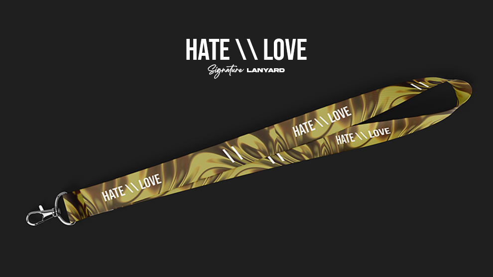

Between the sky and the earth, love and hate hang in suspense. Like mist shrouding the air, they hover between hope and despair. Love hangs with tenderness, promising boundless happiness, while hate dangles with arrogance, inflicting profound pain. Like intertwined threads, they are bound in an inseparable struggle. We are trapped in a complex web, feeling the alluring vibrations of love and the flickers of hate. In this hanging uncertainty, we navigate between contrasting emotions, seeking a balance between wandering love and unsettling hate. Until we realize that in this uncertainty, love and hate complement each other, forming a landscape of emotions that takes us on a soul-stirring journey.
